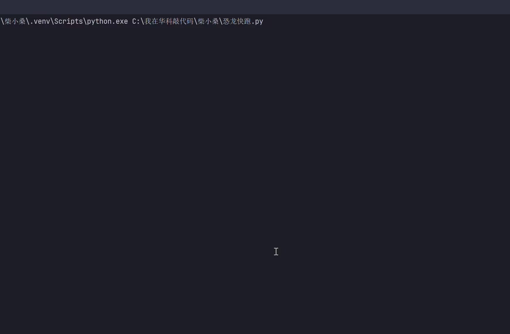
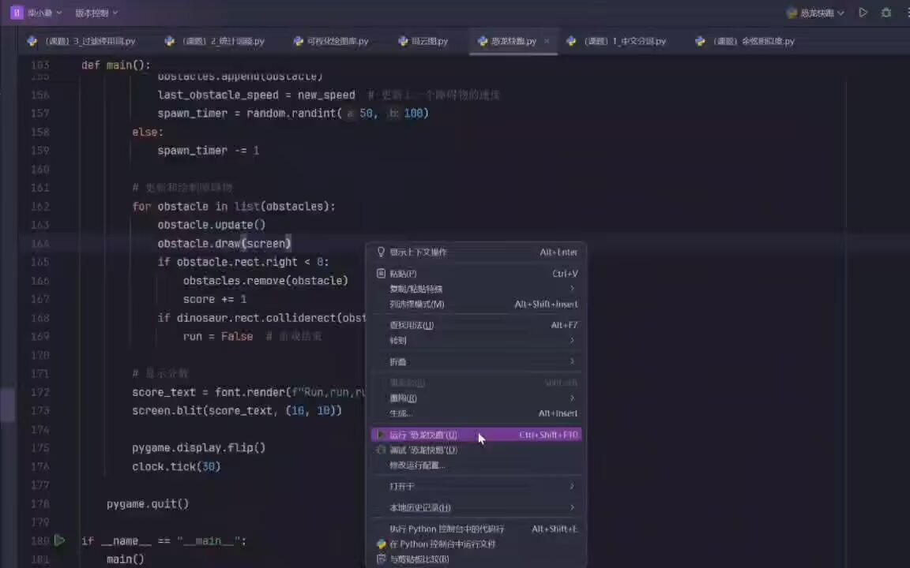

Journal · 2024-11-26
湖北省武汉市
以下代码文件，纪念母校的百廿诞辰！
校友们都捐了好多文献和资金，
而我只想给HG捐个小游戏。
南湖路一号，我想悄悄地告诉你：
“我爱你！真的，没骗你！”
（这里就放本日的图片）
程老师 : 我也想玩这个游戏
熊媛媛 : 我也想玩!
熊媛媛 : 为什么我学的Python天天就是搞模型算精确度（喜获0.5不如抛硬币），你学的Python可以做小游戏
柴江赣北 回复熊媛媛 : 恐龙快跑(黄州府)2.0版正在调试。增添“路灯”元素，“小恐龙”的敏捷度和流畅度显著提高！
熊媛媛 回复柴江赣北 : 做好请务必发出来让我康康
柴江赣北 回复熊媛媛 : 做好了！
恐龙快跑(黄州府)2.0版正在调试：
增添“路灯”元素，“小恐龙”的敏捷度和流畅度显著提高！！！
（这里就放本日的视频）
程老师 :
程老师 : 厉害啊，程序员大佬
黄炜 : nb啊


The following code file, in commemoration of my alma mater's 120th anniversary!
The alumni have all donated many documents and funds,
while I only want to donate a little game to HG.
No. 1 Nanhu Road, I want to quietly tell you:
“I love you! Really, I'm not lying to you!”
(Today's pictures go here)
Teacher Cheng : I want to play this game too
Xiong Yuanyuan : I want to play too!
Xiong Yuanyuan : Why does the Python I learn just keep making models and calculating accuracy (thrilled to get 0.5, worse than flipping a coin), while the Python you learn can make little games
Chai Jiangganbei replying to Xiong Yuanyuan : Dinosaur Run (Huangzhou Prefecture) version 2.0 is being debugged. Adding the “streetlight” element, the agility and smoothness of the “little dinosaur” have improved significantly!
Xiong Yuanyuan replying to Chai Jiangganbei : When it's done, please be sure to send it out so I can take a look
Chai Jiangganbei replying to Xiong Yuanyuan : It's done!
Dinosaur Run (Huangzhou Prefecture) version 2.0 is being debugged:
Adding the “streetlight” element, the agility and smoothness of the “little dinosaur” have improved significantly!!!
(Today's video goes here)
Teacher Cheng :
Teacher Cheng : Impressive, you programming pro
Huang Wei : so awesome
Le fichier de code suivant, en hommage au 120e anniversaire de mon alma mater !
Les anciens élèves ont tous fait don de nombreux documents et de fonds,
alors que moi, je ne veux faire don que d'un petit jeu à HG.
N° 1, rue Nanhu, je veux te le dire tout bas :
“Je t'aime ! Vraiment, je ne te mens pas !”
(Les photos du jour vont ici)
Professeur Cheng : Moi aussi, je veux jouer à ce jeu
Xiong Yuanyuan : Moi aussi, je veux jouer !
Xiong Yuanyuan : Pourquoi le Python que j'apprends ne sert-il tous les jours qu'à faire des modèles et calculer la précision (tout content d'obtenir 0,5, pire qu'un pile ou face), alors que le Python que tu apprends permet de faire des petits jeux
Chai Jiangganbei en réponse à Xiong Yuanyuan : La version 2.0 de Dinosaur Run (Préfecture de Huangzhou) est en cours de débogage. En ajoutant l'élément “réverbère”, l'agilité et la fluidité du “petit dinosaure” se sont nettement améliorées !
Xiong Yuanyuan en réponse à Chai Jiangganbei : Une fois terminé, envoie-le-moi pour que je puisse y jeter un œil
Chai Jiangganbei en réponse à Xiong Yuanyuan : C'est terminé !
La version 2.0 de Dinosaur Run (Préfecture de Huangzhou) est en cours de débogage :
En ajoutant l'élément “réverbère”, l'agilité et la fluidité du “petit dinosaure” se sont nettement améliorées !!!
(La vidéo du jour va ici)
Professeur Cheng :
Professeur Cheng : Impressionnant, grand maître du code
Huang Wei : trop fort
Die folgende Code-Datei, zum Gedenken an den 120. Geburtstag meiner Alma Mater!
Die Alumni haben alle viele Dokumente und Gelder gespendet,
während ich HG nur ein kleines Spiel spenden möchte.
Nanhu-Straße Nr. 1, ich möchte dir ganz leise sagen:
“Ich liebe dich! Wirklich, ich lüge dich nicht an!”
(Hier kommen die Bilder des Tages hin)
Lehrer Cheng : Ich möchte dieses Spiel auch spielen
Xiong Yuanyuan : Ich möchte auch spielen!
Xiong Yuanyuan : Warum geht es bei dem Python, das ich lerne, jeden Tag nur darum, Modelle zu bauen und die Genauigkeit zu berechnen (freudig 0,5 zu bekommen, schlechter als eine Münze zu werfen), während du mit dem Python, das du lernst, kleine Spiele machen kannst
Chai Jiangganbei antwortet Xiong Yuanyuan : Dinosaur Run (Präfektur Huangzhou) Version 2.0 wird gerade gedebuggt. Durch das Hinzufügen des Elements “Straßenlaterne” haben sich die Wendigkeit und Flüssigkeit des “kleinen Dinosauriers” deutlich verbessert!
Xiong Yuanyuan antwortet Chai Jiangganbei : Wenn es fertig ist, schick es bitte unbedingt raus, damit ich einen Blick darauf werfen kann
Chai Jiangganbei antwortet Xiong Yuanyuan : Fertig!
Dinosaur Run (Präfektur Huangzhou) Version 2.0 wird gerade gedebuggt:
Durch das Hinzufügen des Elements “Straßenlaterne” haben sich die Wendigkeit und Flüssigkeit des “kleinen Dinosauriers” deutlich verbessert!!!
(Hier kommt das Video des Tages hin)
Lehrer Cheng :
Lehrer Cheng : Stark, du Programmierer-Profi
Huang Wei : krass